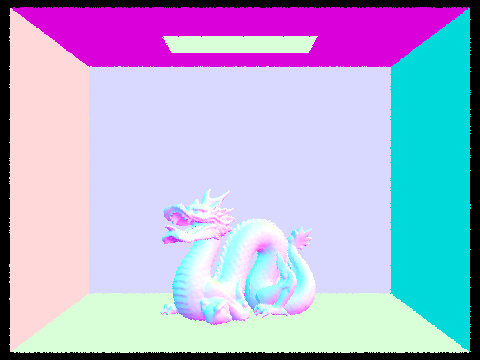

Note: all renders have been done using 12 threads at a resolution of 480 X 360
In order to start ray tracing, we need rays. So to start out with I implemented a ray generation algorithm that would take in the x, y coordinates in screen space and turn those into rays in world space based on the camera's fov. This involved translating the screen coordinates into camera space based on the fov, and then converting from camera space to world space based on the camera's position and rotation in the scene.
Now that we have rays, we need a way to detect when they intersect with the scene. There are two primitive objects I implemented in this section. The first was a simple triangle intersection algorithm. The process of this was done similarly to project 1, but now in 3 dimensions. Since the barycentric coordinates would be essential after the collision anyway, I used the efficient barycentric coordinate calculation we learned in class and checked if those coordinates corresponded to a position inside the triangle. After implementing this I was able to render scenes with normal based shading.
The other primitive I implemented was sphere intersection. This process was similar to the triangle intersection but now we are solving the equation for a sphere. This part led to some troubles down the line because a ray will likely intersect the sphere twice and it is important to return the correct intersection. If you do not, it can cause interesting behavior when calculating lighting later on. After implementing this I was able to render spheres.
The naive approach to checking for ray collisions involves checking the ray against every triangle in the scene. This approach gets very slow as the number of triangles increases. Luckily there are several approaches to speed this up. The one I implemented in this part is called bounding volume hierarchy. The idea of this is very similar to that of a binary tree. We create a large bounding box around every triangle in the scene. Then split the set of triangles in half based on some heuristic and create a smaller bounding box around that set. This process continues, until the set of triangles in the "leaf" nodes of this binary tree are small enough. To check for ray collisions, all you need to do is check for collisions with the top bounding box. If it collides you then can check it's two children, and repeat all the way until a leaf node where you can check the triangles.
The choice of heuristic is a complicated one. For this project I went with this approach: Find axis with the widest range (furthest distance between min and max position), then split the set of triangles around the midpoint of that axis. This heuristic is not perfect when it comes to efficiency, but it still provides a significant speedup.
5,856 Triangles
Without BVH: 11.5161s
With BVH: 0.0344s
7,884 Triangles
Without BVH: 20.5340s
With BVH: 0.0475s
28,588 Triangles
Without BVH: 90.1177s
With BVH: 0.0782s
As you can see the speedup for BVH is incredible. This comes down to one simple factor, the runtime of the naive approach scales linearly with the number of triangles, while the runtime of the BVH approach scales roughly with the log of the number of triangles. The result of this is massive speedups with a large numbers of triangles. Without BVH the rest of this project would be nearly impossible to complete in a way that wouldn't take hours to render.
Here are two photos that would be nearly impossible to render with the naive approach, likely taking several minutes each. But with the BVH both of these scenes can be rendered in about 0.06s
133,796 Triangles
0.0647s
100,012 Triangles
0.0515s
In this approach I implemented two approaches for direct illumination. The first, more naive, approach was uniform hemisphere sampling. The way this works is that is that for each pixel a ray is shot out, upon collision we need calculate the lighting at that point. In order to do that with hemisphere sampling we shoot out several rays from that point in random directions (in a hemisphere aligned with the normal of the object). We then check each of those rays to see if it hit a light. There is a fatal flaw in this approach however. In many scenes, in most directions there are no lights. So most of the rays shot out serve absolutely no function other than to waste computation. This is where importance sampling comes in. With this approach we only sample in places where there is likely going to be a light. So for each light in the scene we sample rays directly towards it, and check for collisions on the way to know whether or not the point is in shadow. This results in a much less noisy image.
Pixel Samples: 16 | Light Samples: 16
Hemisphere Sampling
24.6633s
Importance Sampling
18.2822s
13.3191s
10.1672s
To compare the effect of the number of light samples let's look at this scene with multiple values.
Importance Sampling | Pixel Samples: 16
Light Samples: 1
1.4689s
Light Samples: 4
3.1132s
Light Samples: 16
11.2910s
Light Samples: 64
47.0429s
As you can see, when using importance sampling the areas fully illuminated, or fully in shadow converge on the correct value very quickly. However points that are only partially illuminated by the light, like the penumbra of the shadow appear very noisy at low levels of light sampling. This is because there is a random chance of the ray being cast either hitting the light or not because the light source is partially occluded. So more rays are needed for this value to converge correctly.
Another advantage importance sampling can give us is point lights. In the hemisphere sampling scheme point lights are essentially useless. The odds of a random ray intersecting with a specific point are essentially 0. However with importance sampling we sample the point light directly. This allows us to render scenes like this.
37.1562s
Direct lighting is nice to calculate shadows but it is not perfect. In the real world light bounces. If an object is held close to a red wall, it will have a bit of red light shining on it that bounced off the wall. The goal of global illumination is to simulate this kind of behavior with light. In order to achieve this each point we sample needs to shoot out another ray to simulate a bounce of light. That ray then simulates another bounce and so on until we reach a maximum ray depth. For the sake of runtime there is also a random chance that any ray will stop before reaching the maximum depth, this approach is called russian roulette.
Here is a scene rendered using just direct illumination like before:
And this is just the global illumination for this scene.
As you can see the bottom of the bunny is well lit because of light bouncing off the floor, and the sides are lit based on the color of the nearby walls. Interestingly the top of the bunny is actually the darkest part despite it being closest to the light. The reason for this is that there aren't many things indirectly shining on the top. The main source would be the roof, but the roof is not as well lit as the floor so in this case where we only look at indirect illumination, the bottom of the bunny receives more light.
Pixel Samples: 1024 | Light Samples: 4
Max Ray Depth: 0
6.3263s
Max Ray Depth: 1
83.8524s
Max Ray Depth: 2
359.8319s
Max Ray Depth: 3
453.8679s
Max Ray Depth: 100
620.2889s
Max Ray Depth: 4 | Light Samples: 4
Pixel Samples: 1
0.5478s
Pixel Samples: 2
1.0635s
Pixel Samples: 4
1.8842s
Pixel Samples: 8
4.1061s
Pixel Samples: 16
7.5397s
Pixel Samples: 64
31.3864s
Pixel Samples: 128
61.6739s
Pixel Samples: 1024
298.4211s
Note: for the sake of time some of these images have been rendered using the adaptive sampling from the next section. This does not change the clarity of the images, but explains the non linear scaling of the runtime for the 1024 sample render
Not every pixel takes as long to compute as every other pixel. If a pixel is in a bright, flat area with few objects around it, it will converge much quicker than an area in shadow or very close to complicated geometry. To account for this I implemented adaptive sampling. The main idea of adaptive sampling is to keep track of the distribution of values you are getting for each pixel. By calculating the standard deviation we can determine how much the pixel has converged to it's proper value. Once this convergence gets close enough we can stop sampling. Here is a scene rendered with adaptive sampling. On the right is a heatmap showing how many samples each pixel took.
Pixel Samples: 2048 | Light Samples: 1 | Max Ray Depth : 5


Red corresponds to pixels that took a long time to converge, while blue pixels converged quicker. As you can see the background and the flat parts of the base farther away from the dragon were the quickest to converge. The part of the base in shadow and near the dragon took slightly longer to converge because those regions are much more impacted by bounce lighting off of the dragon. There is a lot of red inside the dragons mouth, and in the nooks and crannies of the model. This is because these areas involve a lot of bounce lighting to calculate correctly. Finally another interesting thing to note is that the outline of the whole model has a thin layer of red. This has to do with anti-aliasing. Since individual rays within a pixel on the boundary may or may not hit the object, it takes longer for the render to converge on those pixels as it needs to figure out how much of the pixel is covered by the mesh.